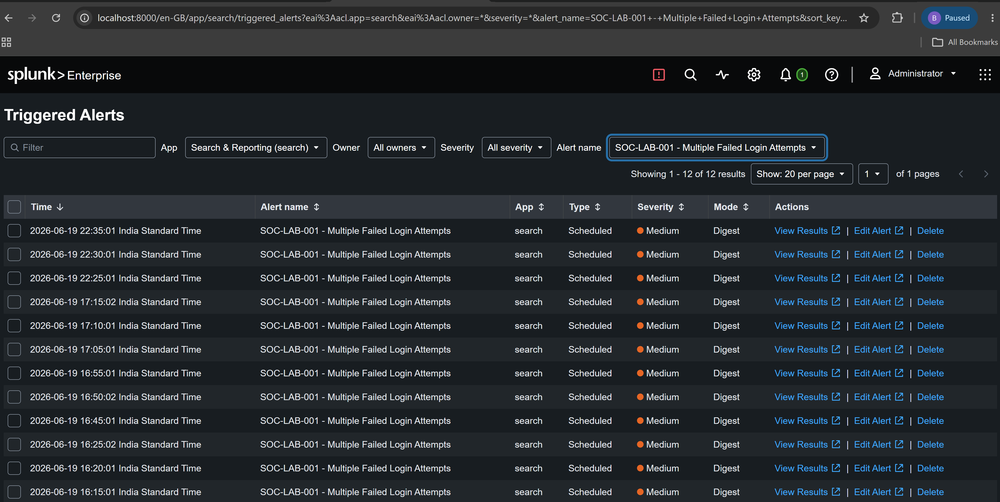
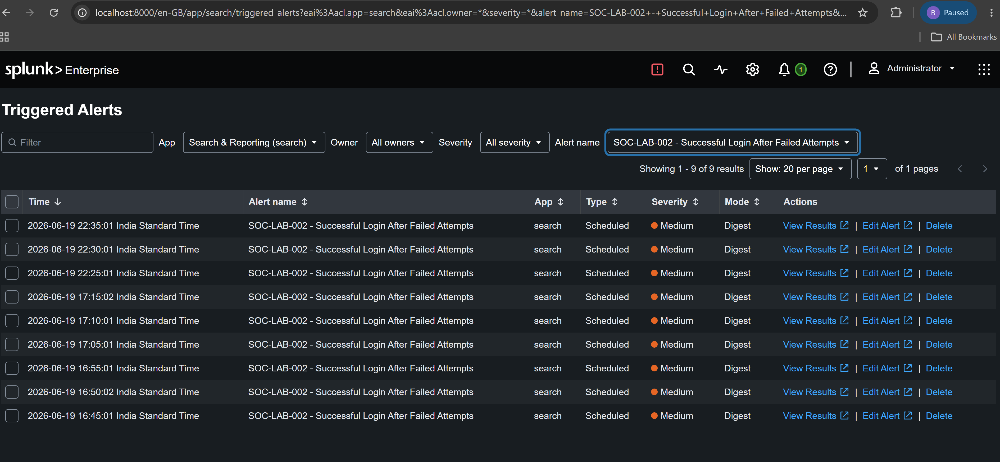

📸 Project Screenshots
Upload screenshots and replace the filenames below.



SOC Analyst | Cybersecurity Enthusiast | Splunk SIEM
Cybersecurity enthusiast with hands-on experience in SOC monitoring, Splunk SIEM, Windows Security Logs, Sysmon, and threat detection. Currently seeking SOC Analyst opportunities in the UAE.
Built a SOC monitoring lab using Splunk Enterprise to collect, analyze, and investigate Windows Security and Sysmon logs.
Upload screenshots and replace the filenames below.


GitHub: github.com/Nisaah
LinkedIn: Add your LinkedIn profile link here
Email: Add your professional email here